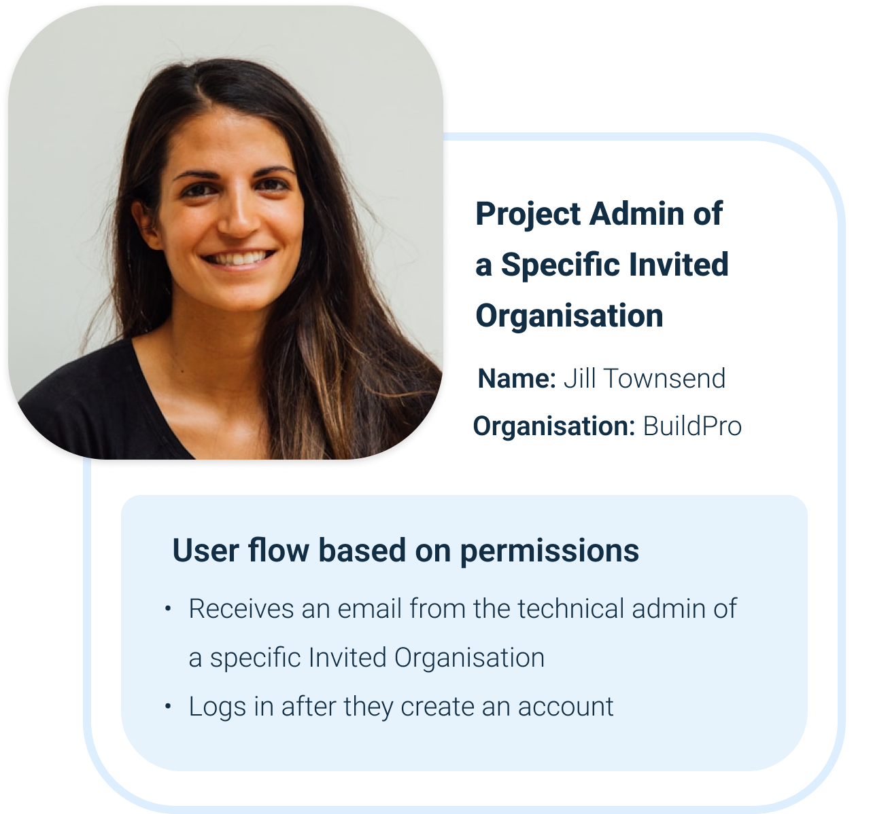
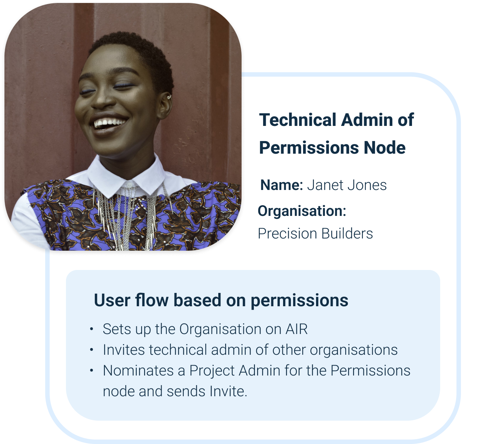
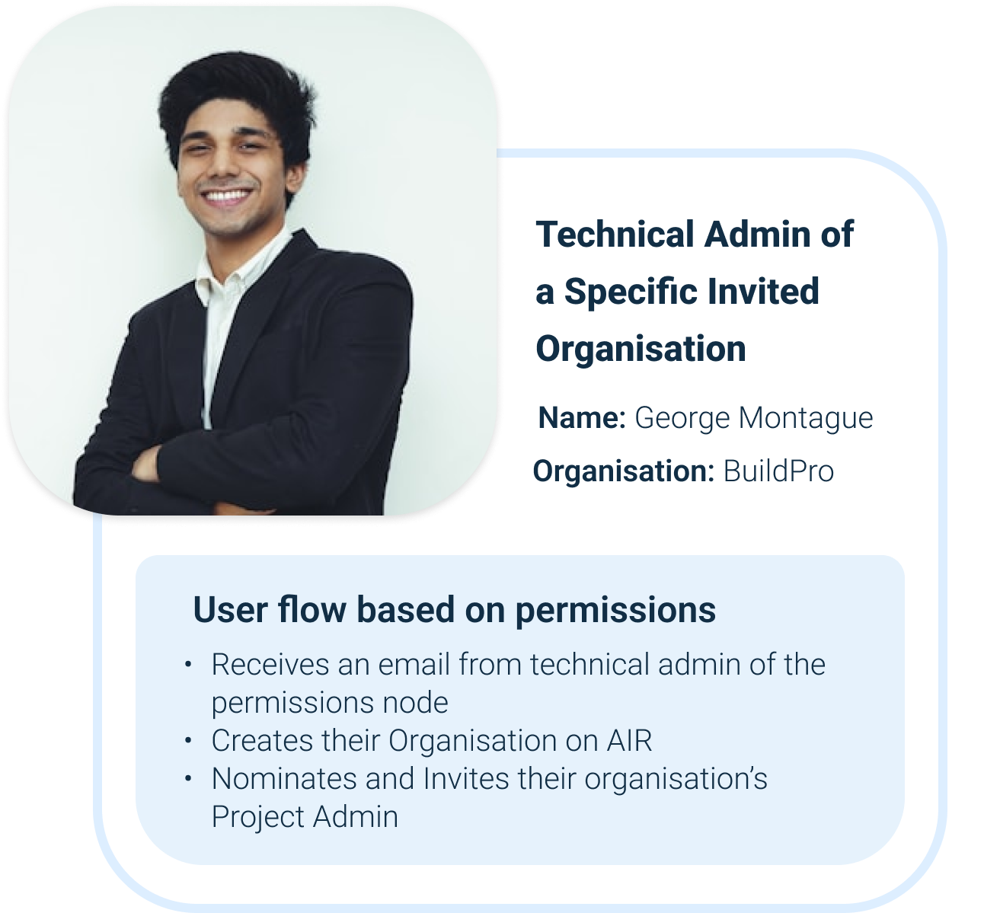
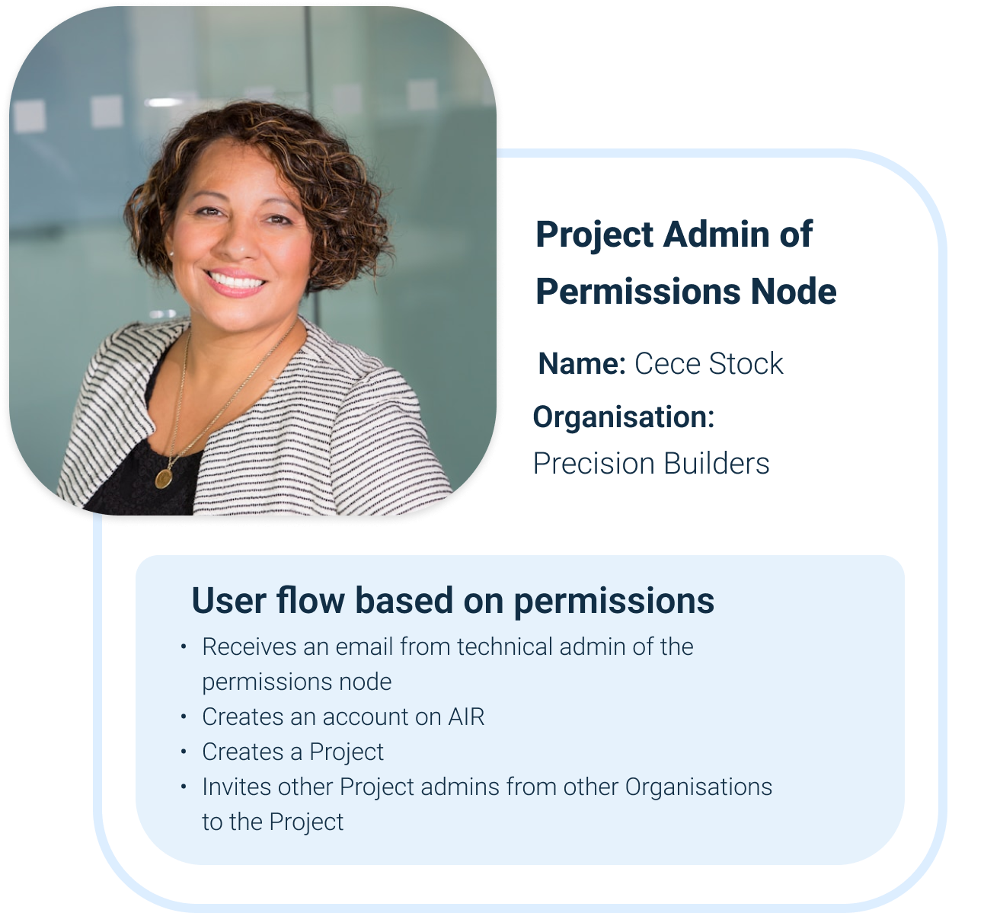
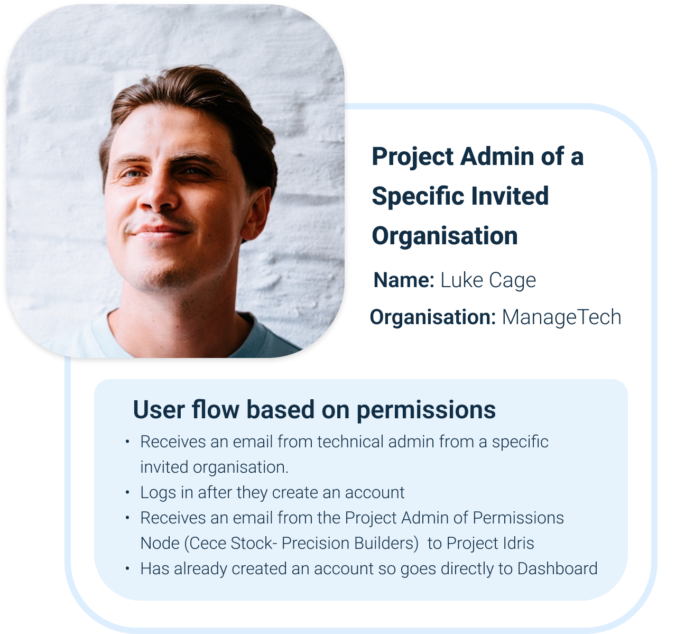
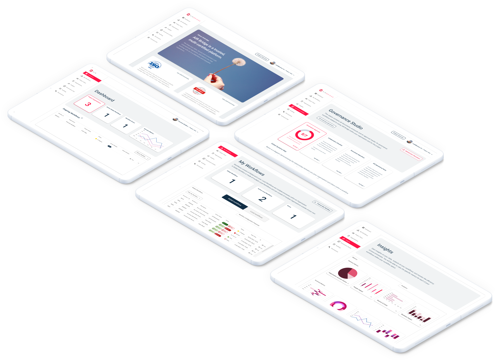

Component Library
Design systems & Component Library
Building a component library wasn't just about reusability, it was about creating a visual language for AI concepts that non-technical users could understand.
Technology Stack


Building trust in distributed AI through transparent workflow orchestration. I designed and developed the UI for a platform that coordinated federated learning across multiple organisations while keeping data private and decisions auditable.
Organisations wanted to collaborate on AI training without sharing sensitive data. Existing solutions were either too technical for non-engineers or lacked the transparency needed to build trust. We needed to design an interface that made complex distributed workflows understandable and controllable.
Traditional AI platforms force companies to centralise data, creating privacy risks and compliance headaches. Federated learning solves the privacy problem technically, but introduces a UX challenge: how do you visualise processes happening across multiple organisations that you can't directly observe?
The dashboard was designed to make distributed AI agents feel like part of the team. Real-time progress visualizations, immediate anomaly alerts, and human-in-the-loop controls gave users clarity and confidence. Trust came from seeing the system work, not from assuming it works behind the scenes.
AirBridge wasn't just complex to design, it was complex to build. Understanding federated learning, RPA integration, and real-time data visualisation required technical depth that informed every design decision.
Different stakeholders needed different views into the same system. I designed role-specific dashboards that surfaced relevant information without overwhelming users.





Each step in the workflow needed clear visual communication to help non-technical users understand what was happening across distributed systems.
Project Admin sets up platform
Technical Admin configures workflow
RPA Robot processes data
Dashboard shows progress
Notifications sent for any updates
Project Admins can act on blockers and notifications (depending on permissions)
Building a component library wasn't just about reusability, it was about creating a visual language for AI concepts that non-technical users could understand.
Every interface choice needed to balance technical accuracy with accessibility. Here's how I approached the hardest problems.
Project Admins saw simplified progress summaries by default, with the option to drill down into technical details. Technical Admins had metrics-focused dashboards. Same underlying data, tailored to different user perspectives.
Five distinct states—Active, Idle, Processing, Warning, Critical—combined color, icons, and text to make AI workflow progress instantly clear and accessible to all users.
I designed atomic components that could be combined into more complex "molecules." For example, a status badge, progress bar, and metadata could come together as a single workflow card. This approach created reusable patterns with maximum flexibility for the dashboard.
Storybook served as more than a developer reference, it became the single source of truth for our design system. Each component included usage guidelines, accessibility notes, and interaction states, making it easy for designers and developers to stay aligned.
The design evolved through constant iteration with stakeholders and developers. Low-fidelity wireframes helped us nail workflow logic before investing in visual polish.


Beyond the deliverables, here's what made this experience formative for my growth as a product designer and developer.
To create meaningful AI workflows, I needed to understand the technology behind them, federated learning, model drift, and RPA orchestration. I studied existing tools, followed industry developments, ran brainstorming sessions with the team, and consulted data scientists.
This deeper understanding let me make smarter design choices, deciding which complexity to surface and which to simplify for users.
Takeaway: The best product designers for emerging tech need to be semi-technical. You can't simplify what you don't understand.
Storybook documentation might feel slow at first, but it accelerates iteration, smooths handoffs, and maintains UI consistency. Early investment in infrastructure yields exponential benefits.
Takeaway: Invest in infrastructure early. The compound effect of good foundations is exponential.
Wearing both design and development hats meant I made tradeoffs that optimised for both user experience AND implementation complexity.
I designed components that were elegant to use AND maintainable to code. That holistic thinking is rare and valuable.
Takeaway: The future belongs to people who bridge disciplines, not siloed specialists.
What we built, and why it matters for human-centered AI design.
We delivered a working proof of concept integrating UiPath's automation platform with a PHP backend. The interface was built entirely in Vue.js and supported by a fully documented Storybook component library, allowing both designers and developers to iterate quickly and consistently.
More importantly, the project demonstrated that AI-driven workflows can be transparent and understandable. Non-technical project managers could track complex, multi-organization processes, make informed decisions, and collaborate effectively, without needing to understand the technical intricacies of federated learning.
AirBridge became a reference for designing human-centered AI systems, showing that trust in AI comes from clarity and visibility, not hidden complexity. Thoughtful design bridged the gap between sophisticated automation and real-world users, creating interfaces that were both powerful and approachable.
Explore Component LibraryDesigning interfaces for intelligent, distributed collaboration.